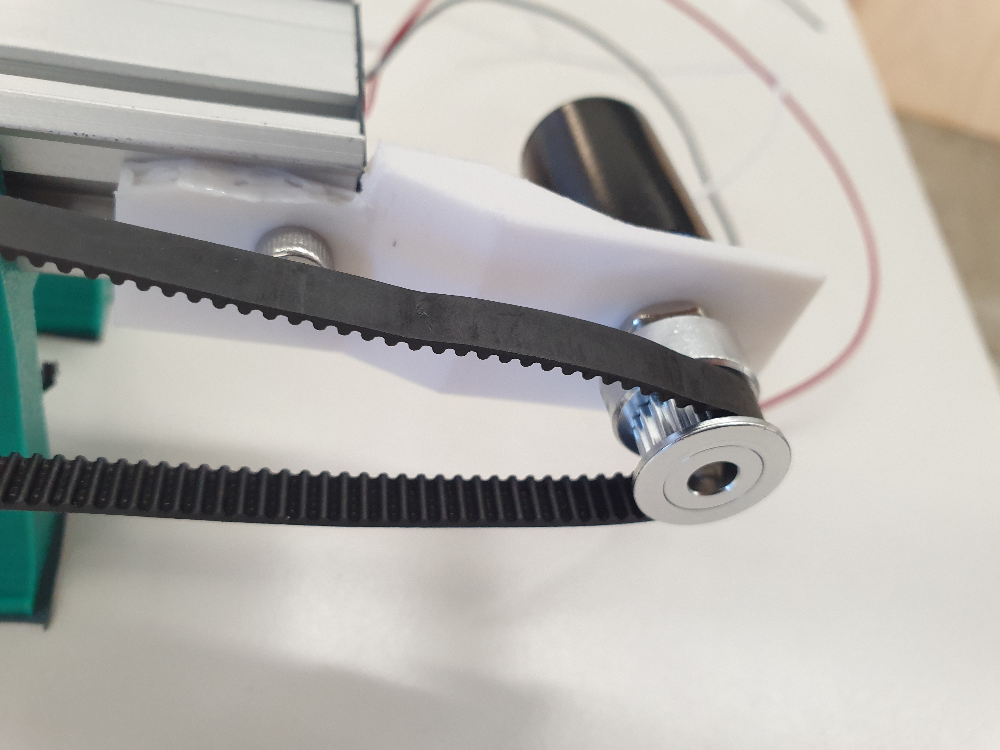

#Updates on final projects
##Week 5 update [(09/27/2022)](https://andreimitoiu22.github.io/PS70-Blog-Andrei-Mitoiu/Week_5.html)
For last week’s assignment, we were also asked to pre-plan our final project and state the bill of materials, timeline and project plan. I decided to make this plan this week, as I didn’t feel like I had enough knowledge last week to create a plan for my final project. I decided that for my final project, I will be pursuing my first idea - that of a slider controlled by a hand remotely. I started by first breaking down all the important elements that I would need for my final project, and then created a timeline for the production of the machine.
###Timeline
####I am planning to build this project from the beginning of week 10 all the way through the end of week 15.
#####• In [week 11](./Week_11.html), I would like to design and build the moving platform.
#####• In [week 12](./Week_12.html), I would like to create the stand, and make sure that the platform and the stand can work together effectively with the motors.
#####• In [week 13](./Week_13.html), I will create the controller and make sure it can control 3D objects effectively.
#####• In [week 14](./Week_14.html), I will implement everything together, write the code so that the communication between the platforms are effective.
#####• In [week 15](./Week_15.html), I will add the final touches and ensure there are no bugs in my program or mistakes in my building.
###Bill of materials
<div class = "flex-center-full-size">
<img src="./Images_Week_5/Billing_plan.PNG">
</div>
##Week 8 update [(10/18/2022)](https://andreimitoiu22.github.io/PS70-Blog-Andrei-Mitoiu/Week_8.html):
For that week, I decided that I will try to build a wooden, at scale prototype of my final project idea: a slider. The slider would be movable, however it would not mimic the final slider concept very faithfully, as I am only looking to get the dimensions of the slider correct. I knew that I would cut OSB in specific shapes and then assemble them together to form the final product. These were the results:
<div class = "flex-center-full-size">
<img src="./Images_Week_8/20221021_182400.jpg">
</div>
##Week 10 update [(11/04/2022)](https://andreimitoiu22.github.io/PS70-Blog-Andrei-Mitoiu/Week_10.html):
For this week, I built a prototype for my final slider project (as can be seen bellow). After building it, I realized that for my final project I would want to make a couple changes to this machine. For starters, I want to replace a driver with another that is able to provide the stepper motor more voltage - for more power and speed. I would also like to replace the legs with something either 3D printed or milled - as I would be able to create a more stable platform with perfectly parallel rails. I will also make the platform more sturdy and stable, as right now, the wheels aren’t well fixed on the platform and rails and fail sometimes. I will also add the two motors on the platform that will rotate the camera in two axes. Moving the belt and the edge motor below the slider would enable the platform to hold so many things - as leaving them like this would get in the way of the camera.
<div class = "flex-center-full-size">
<img src="./Images_Week_10/slider moving via buttons.gif">
</div>
##Week 11 update [(11/11/2022)](https://andreimitoiu22.github.io/PS70-Blog-Andrei-Mitoiu/Week_11.html):
This week, I initially wanted to just look into coding, and find ways to make my final product as independent as possible from my laptop. Unfortunately, the computer vision required for hand tracking implied I was either restricted to wi-fi (if I would be able to host an online server where this information would be processed) or by a wired connection to my computer. As I then realized the impracticality of using the hand tracking software, I came up with a new concept: a moving joystick on a different slider that would enable the user to control the camera slider from a distance using radio signals. While you can see the protorype bellow, I learned a lot from it as it is far from perfect. For starters, I knew I had to make sure to manage the wires more securely, as they could easily get in the way of the joystick. Therefore, when I will build my final product, I will make sure to 3D print the pieces to be more accommodating for the wires, and will also try to hide the connecting wires somehow. I also want to design a better holder for the potentiometers, so that I won’t have to tape them to the case anymore. Furthermore, to make sure the joystick stays upright, I want to add some springs to hold the joystick up high. This would also make a joystick sturdier, enabling a smoother movement of the camera. I also deem it necessary to test out the potentiometers and adjust their positioning accordingly in the final design. I am doing this because they have a blind area in which there is either no resistance or full resistance. The angle that actually has the varying resistance needs to be detected - so that I could then restrain the range of rotation of the potentiometer through a mechanical design.
<div class = "flex-center-full-size">
<img src="./Images_Week_11/Joystick_final.gif">
</div>
##Week 12 - 13 update [(11/15/2022 - 12/11/2022)](https://andreimitoiu22.github.io/PS70-Blog-Andrei-Mitoiu/Week_15.html)
For these next couple of weeks, I mainly worked on the final project. While all the main parts of this projects are documented [here](https://andreimitoiu22.github.io/PS70-Blog-Andrei-Mitoiu/Week_15.html), I wanted to document a failed prototype that I was hoping to utilise. Instead of the ultrasonic sensor used in [week 11](https://andreimitoiu22.github.io/PS70-Blog-Andrei-Mitoiu/Week_11.html), I was hoping to use a 10-step potentiometer that would be turned whenever the platform would move. This would have been done through a belt that would have rotated it whenever the platform it was attached to vould move from left to right and vice versa. While this idea was great in theory, unfortunately it didn't work out in practice, as I could not tigthen the belt enough to the potentiometer (without breaking it) so that it would be consistently rotated by it. The readings were not great either, as when the platform was stationary I was still getting unstable values. This issue would have been more easily troubleshooted with the ultrasonic sensor, so I decided to use it instead to tell the distance of the platform from its origin.
<div class="two-image-row">

</div>
Secondly, I also wanted to share all the failed and unusable 3D prints that I had to go through. This project was a lot of work, and I had to go through a lot of iterations for each piece to get it to work.
<div class = "flex-center-full-size">
</div>